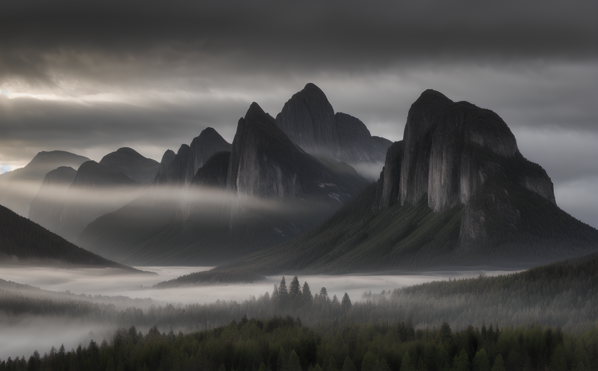
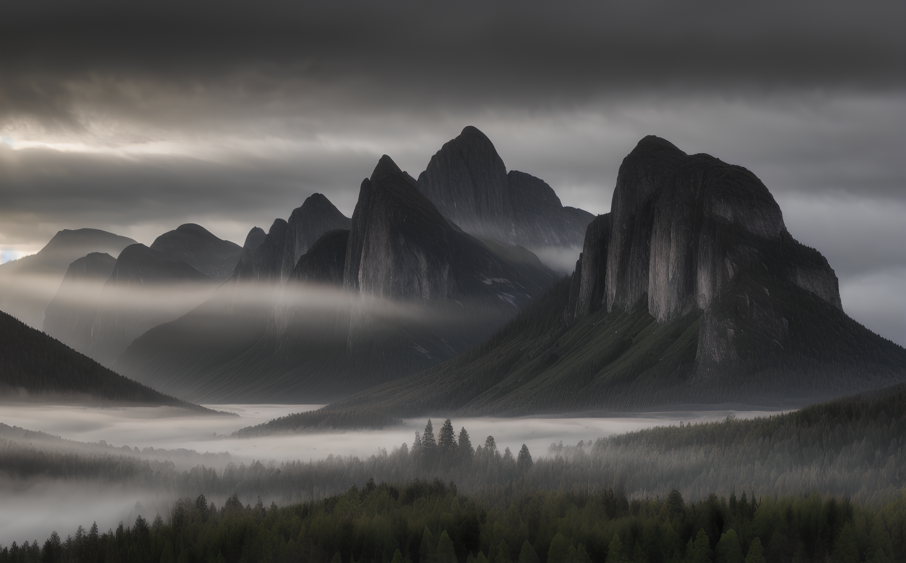

In the summer of 2023, I watched a video by Corridor Crew in which they demonstrated the special-effects capabilities of Automatic1111’s Stable Diffusion web interface.
Inspired by their work, I set out to recreate some of the effects using my own footage.
To better understand their workflow, I obtained a membership on their website and attempted the process myself.
Their approach required setting up Automatic1111 locally and training a custom LoRA for a Stable Diffusion model.
I attempted this, but ultimately ran into hardware limitations, as I was working on a laptop with only 4 GB of VRAM.
Despite trying various online resources, I was unable to complete the training process and eventually had to pause the project (see images below for my initial attempts).
I now have access to a significantly more powerful system, and the available documentation and community resources have improved substantially since then.
As a result, I plan to revisit this project in the near future.
Automatic1111 is already installed again, and the next step is simply dedicating time to continue experimenting (see additional images below).
After dialing in the settings further (Like the last two pictures), I began experimenting with higher-resolution generations.
The two landscapes shown below are examples of this process. While the originals were generated in 4K, they are displayed here at a reduced size because otherwise, they would take up the whole screen.
 

I also experimented with an older photo of myself. Initially, I extended the image horizontally to adapt it for square profile pictures.
After achieving that, I continued exploring the technique in a more playful and creative way.